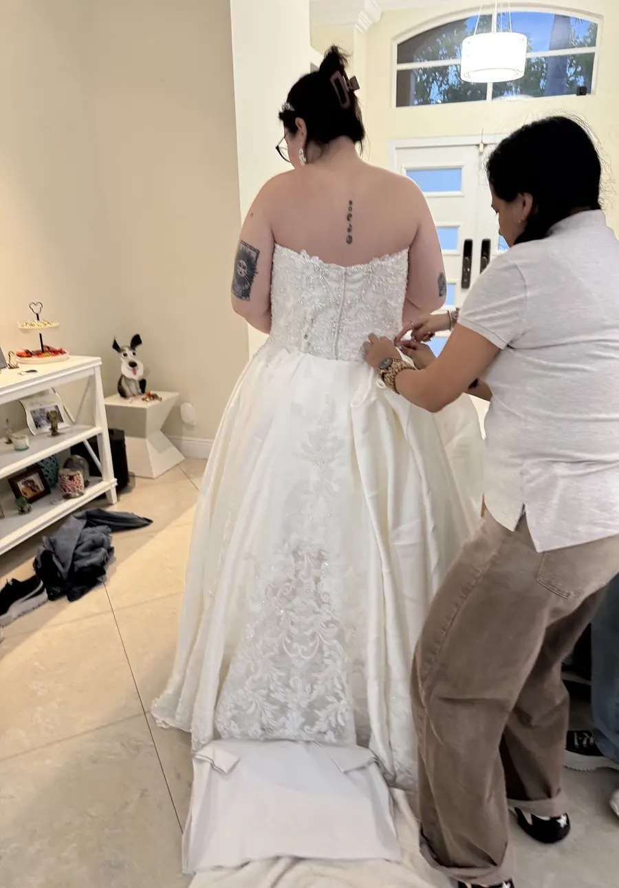
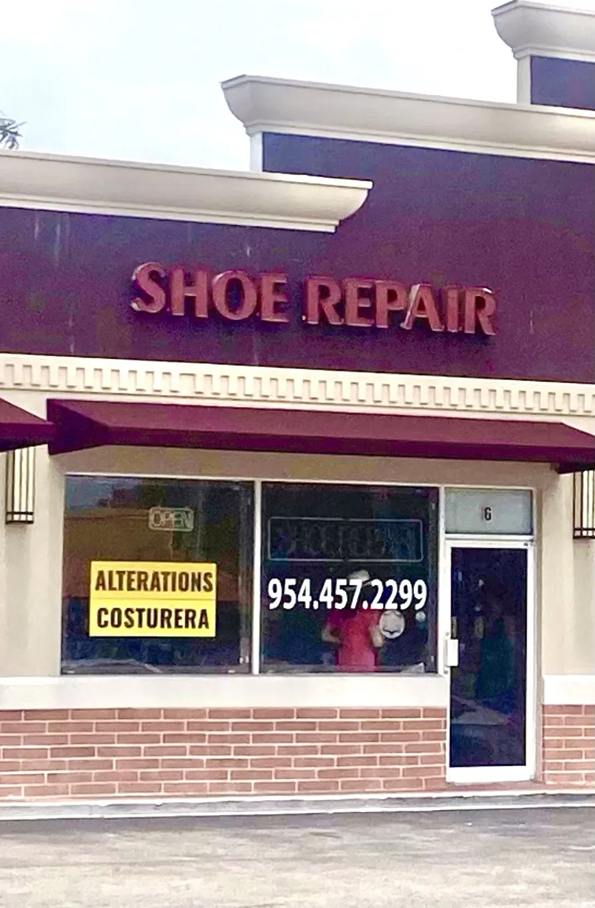
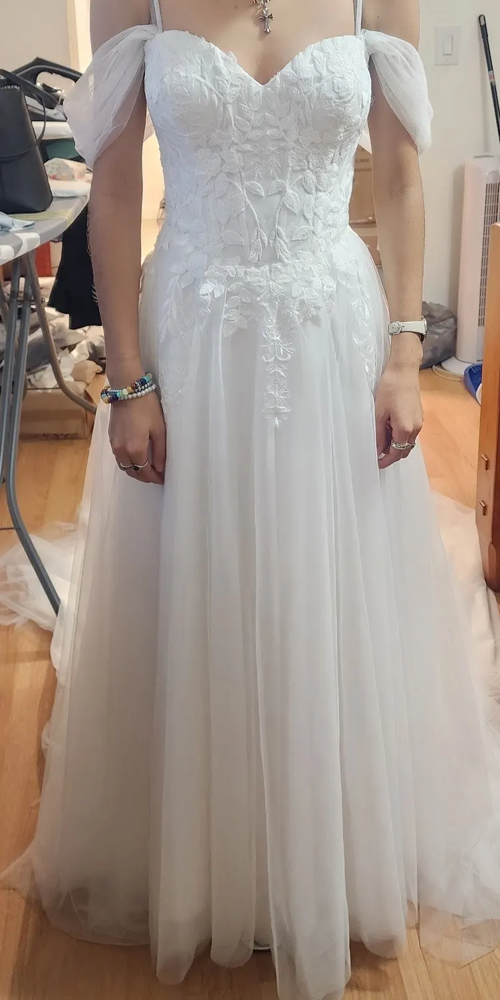
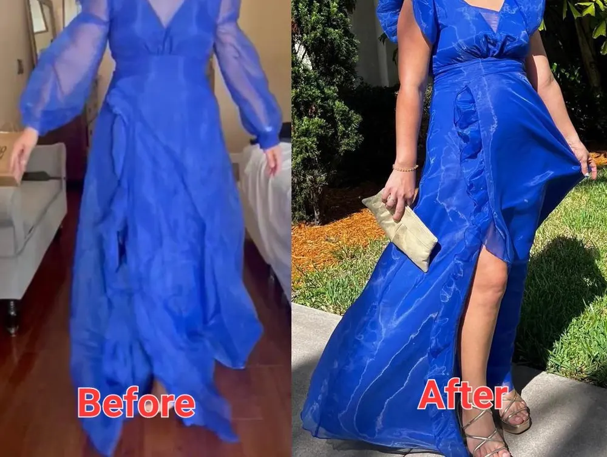
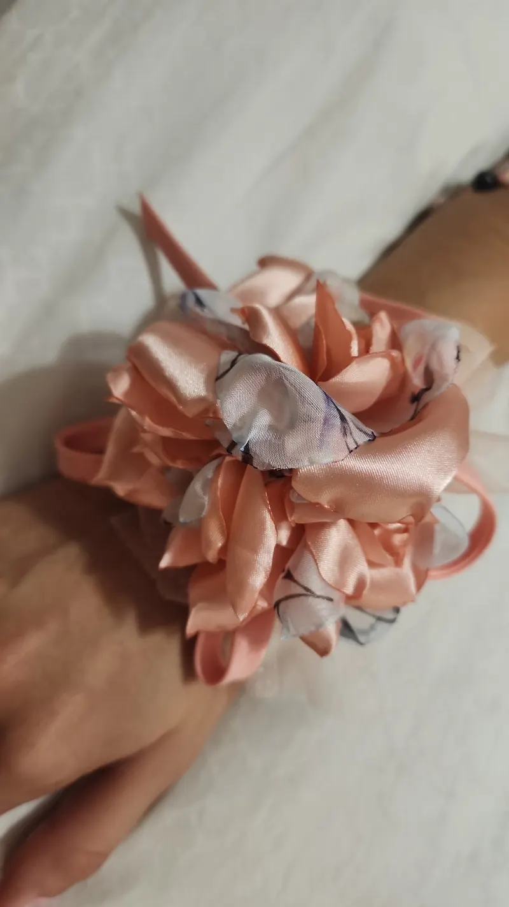
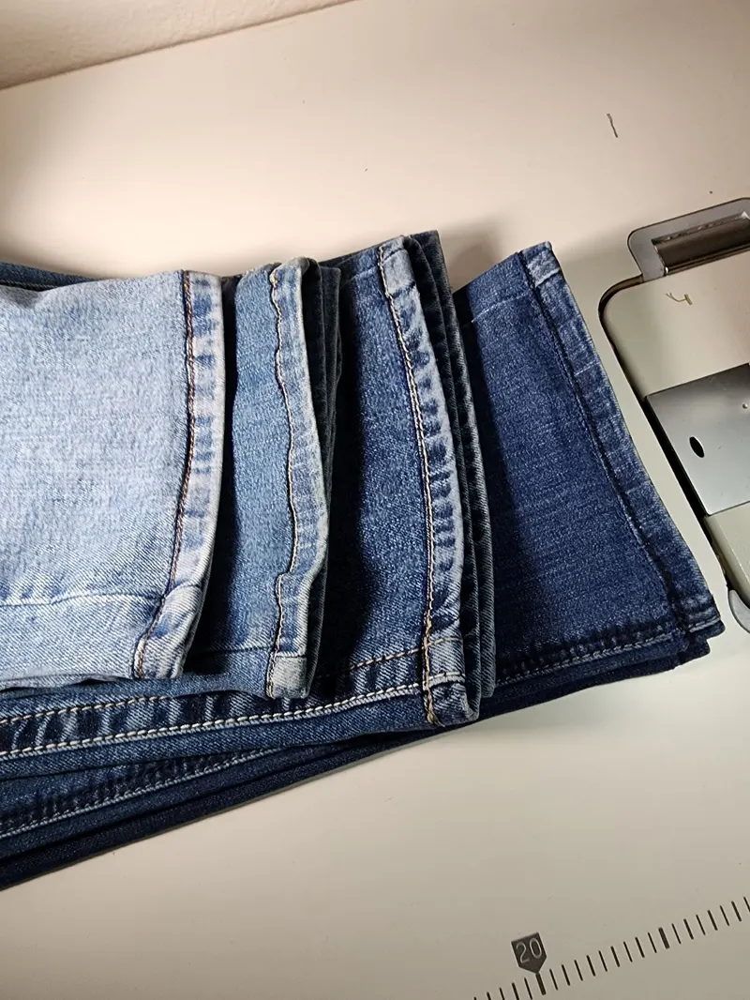

Hallandale Beach · Alterations & shoe repair
Made to fit.
Made to last.
Two crafts under one plum awning on Hallandale Beach Boulevard — Marycarmen’s needle for wedding gowns, designer pieces and everyday alterations, and Nelson’s bench for the boots and heels you can’t give up.


The needle
Marycarmen’s
Alterations
- Wedding dressesHer specialty, clients say — down to the details that matter on the day.
- Designer clothesCareful work on the pieces you invested in.
- Everyday alterationsJeans, suits, dresses — done quickly, with impeccable details.
The last
Nelson’s
Shoe Repair
- BootsRepaired and brought back into rotation.
- HeelsChanged and upgraded, like the boots one client brought in for his wife.
- The ones you loveBring in the pair you’d rather fix than replace.
From the work table
Gowns, guests
& the finishing touch.
Photos from the shop’s Google listing.




In their words
“A priceless
treasure.”
“Maricarmen is a priceless treasure for any and all alterations. She specializes in Wedding Dresses as well as designer clothes. My granddaughter’s dress purchased at Kleinfeld in…”
Maria
“I love my girls, Marycarmen and Vicky!! They work very quickly and focus on impeccable details!! I highly recommend both of them!! ❤️❤️❤️❤️”
Yuisa
“The owners are very professional. They do great work when it comes to clothing alterations and shoe repair. They repaired my wife’s boots and upgraded the heel…”
Felipe
Visit the shop
600 W Hallandale
Beach Blvd, Unit 6
In The Shoppes of Hallandale (Faith Shopping Plaza), Hallandale Beach, FL 33009. Wheelchair-accessible parking lot.
- Monday10 AM – 6:30 PM
- Tuesday10 AM – 6:30 PM
- Wednesday10 AM – 6:30 PM
- Thursday10 AM – 6:30 PM
- Friday10 AM – 6:30 PM
- Saturday10 AM – 5 PM
- SundayClosed
Hallandale Beach, FL Tap for directions →